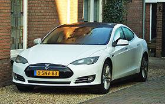
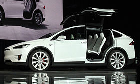

|
|
KAZAYI TAHMİN EDEN ARABA: TESLA! Hızla popülerlik kazanan TESLA elektrikli arabaları yapay zekasıyla da hayranlık verici. Bir sürüş sırasında yaşanan olayın araç kamerasına yakalanması ile zekasını kanıtlayan Tesla arabası artık gelecek teknolojisine yön verecek gibi görünüyor. TESLA MOTORS Tesla Motors, Inc., elektrikli araç ve elektrikli araç motor parçaları tasarlayan, üreten ve satan bir Amerikan şirketidir. TSLA sembolü ile NASDAQ borsasında işlem gören halka açık şirkettir. Tarihinde ilk defa 2013 birinci çeyreğinde hissedarlarına kar payı dağıtmıştır. Tesla tamamen elektrikli ilk spor otomobil üretimi, Tesla Roadster, ile dikkatleri çekmiştir. Şirketin ikinci aracı Model S'dir, (tam elektrikli lüks sedan otomobil), ve bu aracı iki yeni araç Model X ve Model 3 modelleri izleyecektir. Mart 2015 itibarıyla, Tesla Motors 2008 yılından bu yana yaklaşık 70.000 elektrikli araba teslim etmiştir. Tesla aynı zamanda elektrikli motor parçalarını, lityum-iyon pil paketleri dahil olmak üzere Daimler ve Toyota otomotiv üreticilerine pazarlar. Şirketin CEO'su Elon Musk, Tesla Motors'u ortalama tüketiciye uygun fiyatlarla elektrikli arabalar sunmayı hedefleyen bağımsız bir otomobil üreticisi olarak öngördüğünü açıkladı. Ortalama tüketici için çıkaracağı Tesla Model 3 fiyatının devlet teşvikleri haricinde 35.000 USD$'dan, teslimatların ise 2017 sonunda başlaması bekleniyor. Ayrıca Tesla 2015 yılında, PowerWall adında, ev kullanımı için bir batarya ürünü çıkardığını açıkladı. Tesla Motors, 2015 Kasım itibarıyla Türkiye pazarına "Tesla Motorları Satış ve Hizmetleri Limited Şirketi" adı altında giriş yapmıştır. Şirketin 2016 yılı planlarında Türkiye'de 9 adet Supercharger adı verilen hızlı şarj istasyonu açacağı öngörülmektedir. TESLA MODEL S Tesla Model S, Tesla Motors tarafından 2012 yılından beri üretilen iki kişilik bataryalı elektrikli (BEV) lüks sedan otomobil modelidir. Dünyanın en çok satan ikinci bataryalı elektrikli otomobili olan araç Amerika Birleşik Devletleri başta olmak üzere Çin, Hollanda, Kanada, Danimarka, Almanya ve İsviçre gibi ülkelerde 60, 60D, 70D, 85, 85D ve P85D olarak 6 farklı donanım seçeneği ile satılmaktadır. Franz von Holzhausen tarafından tasarlanan araç, ön gelişim sürecinde Whitestar kod adıyla anılmaktaydı. Model S'in varlığı 30 Haziran 2008'de düzenlenen bir basın açıklamasıyla beraber resmen duyuruldu. Prototip araç ise 26 Mart 2009 tarihinde düzenlenen bir basın açıklamasıyla beraber basına tanıtıldı.  TESLA MODEL X Tesla Model X, Tesla Motors tarafından üretilen full-size elektrikli crossover SUV modelidir. Aracın prototipi ilk kez 9 Şubat 2012 tarihinde Tesla'nın Los Angeles'taki tasarım stüdyolarında tanıtıldı. Tesla Model S ile aynı platformda olup arka kapıları martı kanat şeklinde tasarlanmıştır. Aracın satışına Eylül 2015 tarihinde başlanmıştır SÜRÜCÜSÜZ OTOMOBİL KAZAYI TAHMİN ETTİ! Sürücüsüz otomobiller, yalnızca trafik kazalarının sayısını belirgin bir biçimde azaltmakla kalmayacak, nadiren gerçekleşecek kazaların etkisini de sınırlayacak. İddianın gerçekten pek de uzak olmadığını sonunda gördük. Tesla aracının trafikte bir kazayı gerçekleşmeden saniyeler önce tahmin ettiği anı gösteren bir video Twitter’da paylaşıldı. Hollanda’da Eindhoven yakınındaki A2 otobanında giden bir Tesla Model X aracını gösteren video, aracın ön kamerasından çekilmiş. Videoda önce otomobilin güvenliğini sağlayan çarpışma önleyici uyarı sisteminin çalışmaya başladığı duyuluyor. 3-4 bip sonrasında Tesla’nın önündeki iki araç çarpışıyor. Aracın erken uyarı sistemi duyulmuyor olsa, çıplak gözle kazanın geleceğini tahmin etmek, öndeki araç görüşü engellediği için, sürüş anında oldukça zor. Ancak Tesla aracının hüneri yalnızca bu kazayı tahmin etmekle sınırlı değil. İşte o kaza anı videosu... |
||
| © 2017 nekibu - Designed by Osman Koç |

|